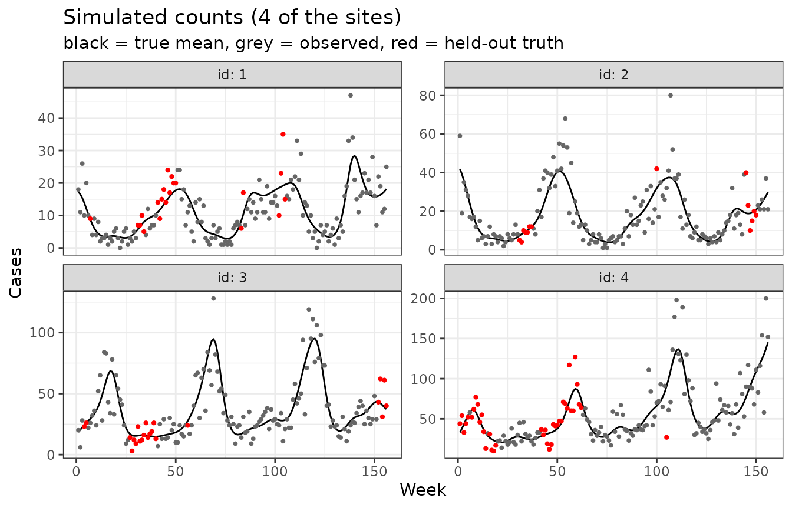
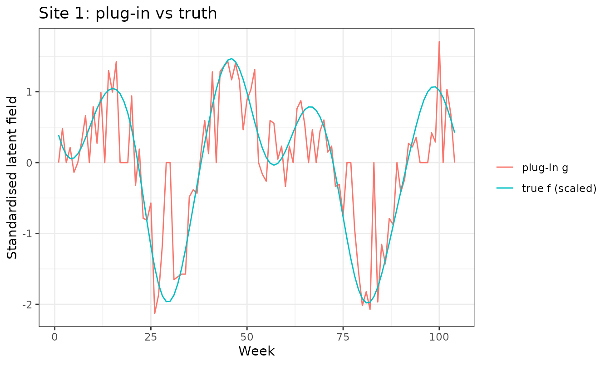
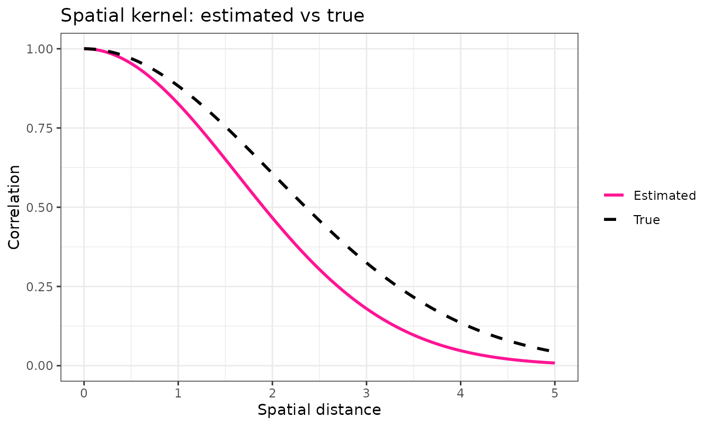
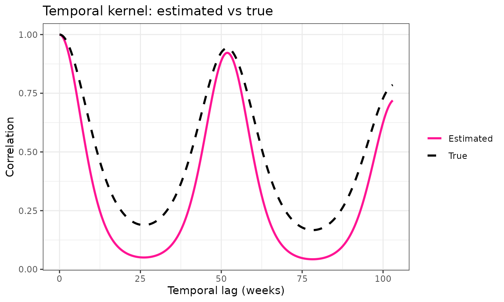
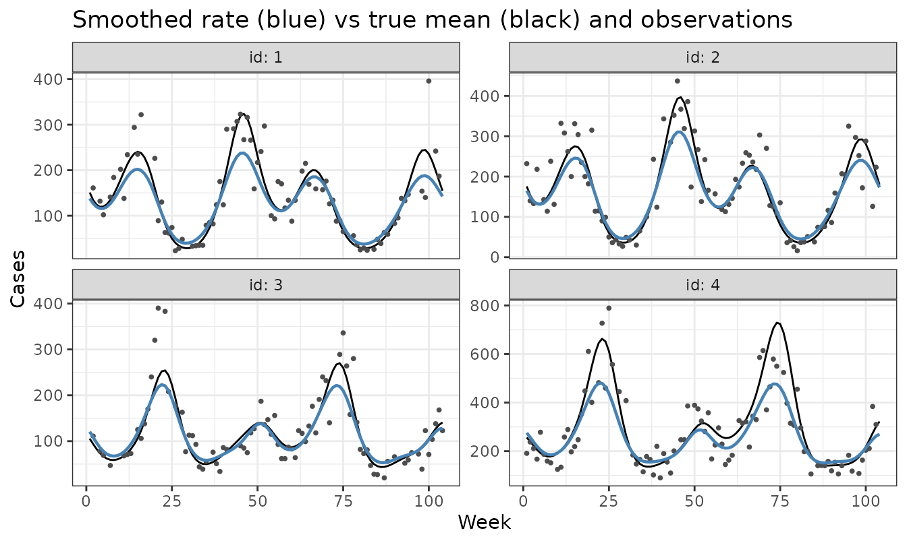

Estimating the kernel hyperparameters
fitting-the-model.RmdThis vignette walks through, step by step, how weave
estimates the kernel hyperparameters — the handful of
numbers that say how quickly counts become uncorrelated as you move
apart in space and in time. We use a small simulated example with a
known answer so you can see the method recover it.
At each stage we give: the maths, a plain-language explanation, and the worked example.
The method is deliberately quick: it is a fast, deterministic estimate, not a full Bayesian fit. The approximations that buy that speed are listed honestly at the end.
1. The model
The maths
We observe a count y at every site s (a
health facility) and time t (a week). We assume
- is a per-site baseline (some facilities are just busier).
- is a smooth latent field: the bit that wiggles up and down in space and time.
- and are kernels — they set how correlated two cells are as a function of how far apart they are.
- is the Kronecker product: the full space-time covariance is built from a small spatial kernel and a small temporal kernel (“separable”).
The kernels have three hyperparameters — the knobs we want to estimate:
-
length_scale— how far apart two sites have to be before they stop looking alike (spatial RBF kernel). -
periodic_scale— how “peaky” the yearly season is. -
long_term_scale— how slowly the year-on-year level drifts.
In plain language
Each facility has a smooth underlying rate of cases. Nearby facilities, and nearby weeks, tend to look similar; far-apart ones drift apart. The three knobs control how quickly that “looking similar” fades with distance in space and in time. Our whole job is to read those three numbers off the data.
The worked example
We simulate data where we choose the true knobs, so we can
check the answer. (simulate_data() and
observed_data() below are small helpers for the example —
they are not part of the package.)
# --- example controls --------------------------------------------------------
n <- 15 # sites
nt <- 104 # weeks (2 years)
period <- 52 # weeks per seasonal cycle
true_length_scale <- 2 # spatial smoothness
true_periodic_scale <- 1.1 # how peaky the season is
true_long_term_scale <- 150 # long-run drift
true_r <- 15 # NB dispersion
# --- small simulation helpers (for the example only) -------------------------
simulate_data <- function(n, nt, coordinates, space_k, time_k, r) {
f <- quick_mvnorm(space_k, time_k) # latent field, time fastest
lambda <- exp(rep(coordinates$mu, each = nt) + f)
data.frame(
id = factor(rep(seq_len(n), each = nt), levels = seq_len(n)),
t = rep(seq_len(nt), times = n),
lambda = lambda,
y = stats::rnbinom(n * nt, size = r, mu = lambda)
)
}
observed_data <- function(data, p_missing = 0.2) {
y_obs <- data$y
y_obs[sample(length(y_obs), floor(p_missing * length(y_obs)))] <- NA
cbind(data["id"], data["t"], y_obs = y_obs)
}
# --- draw the data -----------------------------------------------------------
coordinates <- data.frame(
id = factor(1:n),
lon = runif(n, 0, 5),
lat = runif(n, 0, 5),
mu = log(runif(n, 10, 80))
)
space_k <- space_kernel(coordinates, length_scale = true_length_scale)
time_k <- time_kernel(1:nt,
periodic_scale = true_periodic_scale,
long_term_scale = true_long_term_scale,
period = period
)
true_data <- simulate_data(n, nt, coordinates, space_k, time_k, r = true_r)
obs_data <- observed_data(true_data, p_missing = 0.2)Here are the first four sites: the black line is the true underlying mean () and the points are the noisy observed counts.
show <- 1:4
df_truth <- transform(true_data, id = as.integer(id))
df_obs <- transform(obs_data, id = as.integer(id))
ggplot() +
geom_line(data = subset(df_truth, id %in% show), aes(t, lambda)) +
geom_point(data = subset(df_obs, id %in% show), aes(t, y_obs),
size = 0.7, colour = "grey30") +
facet_wrap(~ id, scales = "free_y", labeller = label_both) +
labs(x = "Week", y = "Cases", title = "Simulated counts (4 of the sites)") +
theme_bw()
2. Step 1 — a quick “plug-in” latent field
The maths
We cannot see the latent field directly. Instead we build a cheap stand-in from the counts:
i.e. take , then for each site subtract that site’s mean and divide by its standard deviation.
In plain language
The logarithm turns the multiplicative “rate” scale into an additive one that matches . Subtracting each site’s average removes the baseline (which we don’t care about here), and dividing by the spread puts every site on the same footing so a single set of knobs applies to all of them. It’s noisy — but it’s instant.
The worked example
g <- build_plugin_field(obs_data, n = n, nt = nt) # length n * nt, time fastest
str(g)
#> num [1:1560] 0 0.481 0 0.211 -0.138 ...For one site, the plug-in field tracks the true latent field, just with observation noise on top:
# reshape g to sites x times and compare site 1 to the truth
G <- t(matrix(g, nrow = nt, ncol = n)) # n x nt
f_true_m <- t(matrix(log(true_data$lambda) - rep(coordinates$mu, each = nt),
nrow = nt, ncol = n)) # true f, centred per site
site <- 1
plot_df <- rbind(
data.frame(t = 1:nt, value = scale(f_true_m[site, ])[, 1], type = "true f (scaled)"),
data.frame(t = 1:nt, value = G[site, ], type = "plug-in g")
)
ggplot(plot_df, aes(t, value, colour = type)) +
geom_line() +
labs(x = "Week", y = "Standardised latent field", title = "Site 1: plug-in vs truth",
colour = NULL) +
theme_bw()
3. Step 2 — score a set of knobs with the marginal likelihood
The maths
For a candidate set of hyperparameters the kernels give a covariance . We add a nugget — a noise term — and a global variance :
where are correlation kernels (unit diagonal). The score for is the log marginal likelihood
We pick the that maximises this. The variance has a closed-form optimum, so we “profile” it out and never search over it.
In plain language
For any guess at the knobs, we can ask: how plausible is the plug-in field if the world really had this much smoothness? The first term () penalises over-flexible kernels (an “Occam” penalty); the second rewards kernels that explain the field well. We turn the dial until the score is best.
The nugget is the important addition: it is a slice of “pure noise” the model is allowed to attribute to observation error instead of signal. Without it, the kernel would have to explain the noisy plug-in field with smoothness alone, badly distorting the length scales.
4. Step 3 — why it is fast: the Kronecker trick
The maths
The full covariance is — here 1560 square. We never form it. Because it is a Kronecker product, eigendecomposing the small factors (size ) and (size ) is enough:
with the eigenvalues, , and the field reshaped to . The cost is instead of .
In plain language
A separable kernel means space and time can be handled separately. So instead of one enormous matrix we juggle two small ones — one for space, one for time — which is astronomically cheaper, and gives the exact same answer. This is the whole reason the estimate takes a second rather than hours.
5. Step 4 — fit, and check against the truth
The worked example
infer_kernel_params() does all of the above: build the
plug-in field, then maximise the marginal likelihood over the three
length scales plus the nugget ratio.
est <- infer_kernel_params(obs_data, coordinates, nt = nt, period = period)
data.frame(
parameter = c("length_scale", "periodic_scale", "long_term_scale"),
truth = c(true_length_scale, true_periodic_scale, true_long_term_scale),
estimate = round(c(est$length_scale, est$periodic_scale, est$long_term_scale), 2)
)
#> parameter truth estimate
#> 1 length_scale 2.0 1.68
#> 2 periodic_scale 1.1 0.82
#> 3 long_term_scale 150.0 129.04
cat(sprintf("nugget ratio (noise/signal) = %.2f; profiled sigma^2 = %.2f\n",
est$nugget_ratio, est$sigma2))
#> nugget ratio (noise/signal) = 0.45; profiled sigma^2 = 0.61The clearest check is to draw the fitted kernels (pink) on top of the true ones (black dashed). If the method worked, they overlap.
kernel_curves <- function(ls, ps, lts, label) {
sp <- data.frame(distance = seq(0, 5, length.out = 200), type = label)
sp$correlation <- rbf_kernel(sp$distance, theta = ls)
tm <- data.frame(lag = seq(0, nt - 1, length.out = 400), type = label)
tm$correlation <- periodic_kernel(tm$lag, alpha = ps, period = period) *
rbf_kernel(tm$lag, theta = lts)
list(space = sp, time = tm)
}
fit <- kernel_curves(est$length_scale, est$periodic_scale, est$long_term_scale, "Estimated")
true <- kernel_curves(true_length_scale, true_periodic_scale, true_long_term_scale, "True")
cols <- c(Estimated = "deeppink", True = "black")
ltys <- c(Estimated = "solid", True = "dashed")
ggplot(rbind(fit$space, true$space),
aes(distance, correlation, colour = type, linetype = type)) +
geom_line(linewidth = 1) +
scale_colour_manual(values = cols, name = NULL) +
scale_linetype_manual(values = ltys, name = NULL) +
labs(x = "Spatial distance", y = "Correlation",
title = "Spatial kernel: estimated vs true") +
ylim(0, 1) + theme_bw()
ggplot(rbind(fit$time, true$time),
aes(lag, correlation, colour = type, linetype = type)) +
geom_line(linewidth = 1) +
scale_colour_manual(values = cols, name = NULL) +
scale_linetype_manual(values = ltys, name = NULL) +
labs(x = "Temporal lag (weeks)", y = "Correlation",
title = "Temporal kernel: estimated vs true") +
theme_bw()
6. Using the estimate: smoothing and filling gaps
The maths
With the kernels fixed, denoising the plug-in field is a closed-form Gaussian-process smoother. In the same Kronecker eigenbasis, each mode is simply shrunk towards zero:
so modes with strong signal (large ) are kept and noisy modes (small) are damped. Undo the per-site standardisation, exponentiate, and you have an estimated rate at every cell — including the missing ones.
In plain language
The fitted kernels tell us which wiggles are real signal and which are noise. The smoother keeps the real ones and irons out the rest, borrowing strength from neighbouring sites and weeks to fill the gaps where data is missing.
The worked example
gp_smoother <- function(obs_data, coordinates, est, n, nt, period) {
ids <- sort(unique(obs_data$id)); times <- sort(unique(obs_data$t))
coordinates <- coordinates[match(ids, coordinates$id), , drop = FALSE]
M <- matrix(NA_real_, n, nt)
M[cbind(match(obs_data$id, ids), match(obs_data$t, times))] <- log1p(obs_data$y_obs)
row_mean <- rowMeans(M, na.rm = TRUE); row_mean[!is.finite(row_mean)] <- 0
Mc <- M - row_mean
row_sd <- apply(Mc, 1, stats::sd, na.rm = TRUE)
row_sd[!is.finite(row_sd) | row_sd == 0] <- 1
G <- Mc / row_sd; G[is.na(G)] <- 0
es <- eigen(space_kernel(coordinates, length_scale = est$length_scale), symmetric = TRUE)
et <- eigen(time_kernel(times, periodic_scale = est$periodic_scale,
long_term_scale = est$long_term_scale, period = period),
symmetric = TRUE)
a <- pmax(es$values, 1e-12); b <- pmax(et$values, 1e-12)
shrink <- outer(a, b) / (outer(a, b) + est$nugget_ratio)
ghat <- crossprod(es$vectors, G) %*% et$vectors
Ghat <- es$vectors %*% (shrink * ghat) %*% t(et$vectors)
exp(row_mean + row_sd * Ghat) # estimated rate, n x nt
}
lambda_hat <- gp_smoother(obs_data, coordinates, est, n, nt, period)
# Overlay the smoothed rate (blue) on the truth for the first four sites.
pred_df <- data.frame(
id = rep(seq_len(n), each = nt), # site-major, time-fastest -- matches
t = rep(seq_len(nt), times = n), # as.vector(t(lambda_hat)) below
lhat = as.vector(t(lambda_hat))
)
ggplot() +
geom_line(data = subset(df_truth, id %in% show), aes(t, lambda)) +
geom_point(data = subset(df_obs, id %in% show), aes(t, y_obs),
size = 0.7, colour = "grey30") +
geom_line(data = subset(pred_df, id %in% show), aes(t, lhat),
colour = "steelblue", linewidth = 0.8) +
facet_wrap(~ id, scales = "free_y", labeller = label_both) +
labs(x = "Week", y = "Cases",
title = "Smoothed rate (blue) vs true mean (black) and observations") +
theme_bw()
7. Caveats and approximations
This is a fast, deterministic estimate — not a full posterior. The shortcuts that make it quick also limit it:
-
Plug-in, not Bayesian. We condition on a single
noisy estimate of the latent field rather than integrating it out. This
attenuates the length scales (
periodic_scaleandlong_term_scaletend to come out a little low). The nugget mitigates this but does not remove it. -
log(1 + y)is a crude stand-in for the latent log-rate, and is poorest at very low counts. - Per-site scaling folds all per-site variance into a single global and amplifies noise at low-count sites.
- One homoscedastic nugget. Real count noise is heteroscedastic (it grows with the rate); we summarise it with a single ratio .
- Missing cells are mean-imputed, so they add no uncertainty of their own.
- A point estimate. We report the maximiser, with no uncertainty on the hyperparameters themselves.
For a quick, honest summary of the spatial and temporal correlation structure — or a sensible starting point for a fuller model — it does the job in about a second. ```